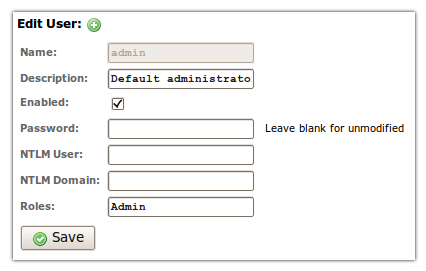

RapidContext requires all users to authenticate with username and password. The user information is available for logging and is also used to check all procedure calls before execution. By default the platform requires administrative privileges for any operation that modifies the configuration or accesses sensitive information.
The default installation of RapidContext contain the following users and roles:
admin (user) – Created if no other users are
detected on server startup. The password is initially set to accept
any value (blank string) and has the Admin role.Admin (role) – A built-in role that provides
full system access. This role is required in order to modify procedures,
install plug-ins, and similar adminirative operations.In the standard configuration, user authentication is supported by the following protocols:
After successful authentication, the user credentials are stored in the HTTP session. This avoids repeated authentication requests and makes other authentication methods feasible (provided by plug-ins).
Note: By default the HTTP sessions are
configured to expire after 4 hours of inactivity. The sessions may also be
forcefully terminated with the System.Session.Terminate
procedure.
Users are managed with the Admin application, in the
Users tab. Below is a screenshot showing the editing
of the default admin user:

New and modified user are automatically stored in the local
plug-in, under the plugins/local/user directory. A few important
facts should be noted regarding the storage of user data:
user directory.
This is discouraged since it makes unintentional reuse of user names
possible. Use the enabled flag instead.user directories and restarting the server, the
default admin user is recreated. This is useful to
reset a server.User roles are by default only possible to create or modify by accessing
the corresponding data files in the plugins/<plugin id>/role
directory. The files are named <name>.properties. See below
for a simple example role file.
# General properties name = Demo description = Provides access to all read-only procedures (if properly named). # Access array access.0.type = procedure access.0.regexp = .*\\.Find[^.]*
All procedure calls are authorized (permission checked) based on the roles
that a user has. The Admin role automatically provides access to
all procedures, but other roles use the configured access array
in the role data file.
access.#.type – The object type to match. Only the
procedure type is currently recognized and used in default
access controls. Use a prefix <plugin id>: for custom
permission types used in generic access controls.access.#.name – The exact object name to match, e.g.
the procedure name. Either this property or the regexp
property must be specified. Use the name property when a
single unique object is to be identified.access.#.regexp – The regular expression object name
to match. Either this property or the name property must be
specified. Note that the "." character has special meaning when using
regular expressions, so it must be escaped with a single "\"
character.access.#.caller – The regular expression caller name
to match. If this property is specified, the procedure will only be
accessible when executed by the matched caller procedure. This is useful
for limiting access to generic helper procedures.access.#.allow – The access permission value, defaults
to true. The permission access list is processed in order,
so once an object matches an access list entry, the value of the
allow property will be returned as the permission check
result.Since only procedures are permission checked by default, other object
accesses must be programmatically checked (from JavaScript procedures) by
using the System.User.CheckAccess procedure.
Note: When using programmatic access checks,
care must be taken to ensure that no procedures are exposed that allow direct
access to the protected data or operation. Make sure to use wrapper JavaScript
procedures and the caller access list property to protect the
direct access to resources.
Before installing a RapidContext server in a publically acessible location, please check the following:
Admin role should be limited, to avoid potential abuse
of the system.